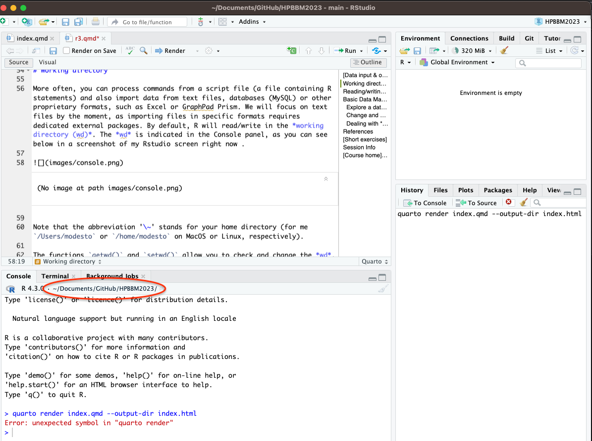
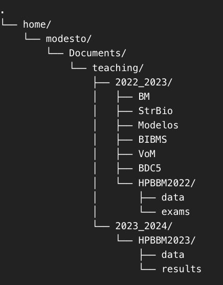
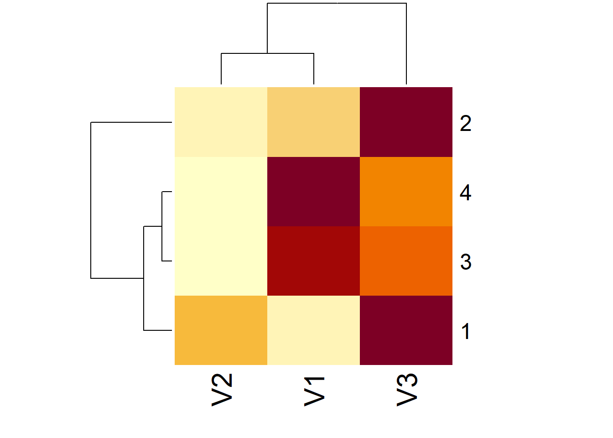

When working with R, we often need to read data from files and write results back to disk. These files can be simple text files, comma-separated tables, spreadsheet exports (e.g. MS Excel files), or more specialised formats used in biological data analysis.
Before reading or writing files, R needs to know where to look for them. By default, R reads and writes files in the current working directory (wd). You can think of the working directory as the folder where R is currently “standing”.
The wd is indicated in the Console panel, as you can see below in a screenshot of my RStudio screen right now.

Note that the abbreviation ~ stands for your home directory. For example, this may correspond to /Users/modesto in macOS, /home/modesto in Linux, or C:/Users/your_user_name in Windows.
The functions getwd() and setwd() allow you to check and change the wd. Try the examples below and pay attention to the output. Remember that you can write ?getwd() or ?setwd() for help.
WarningFile paths in different operating systems
File paths are written differently depending on the operating system. Linux and macOS use forward slashes (/), whereas Windows usually displays paths with backslashes (\). In R, however, it is safer and simpler to write Windows paths using forward slashes (/) or double backslashes (\\), because a single backslash has a special meaning inside character strings.
For example, this Windows path:
C:\Users\Ana\Documents\HPBBM2025\data
can be written in R as:
"C:/Users/Ana/Documents/HPBBM2025/data"
or as:
"C:\\Users\\Ana\\Documents\\HPBBM2025\\data"
The following example was generated in a Windows 11 computer. However, unless otherwise indicated, most of the examples and exercises in this site were generated under macOS or Ubuntu and should be adapted if you want to try them out in Windows.
# Windows example# First, check where R is currently looking for files.# This is useful before reading or writing any file.getwd()
# Now we change the working directory to an existing folder.# Notice that, even in Windows, we use forward slashes (/).setwd("C:/Users/MR.5052598")getwd()
[1] "C:/Users/MR.5052598"
# Intentional mistake 1: typo in the folder name.# "Documnts" does not exist, so setwd() should return an error.# This is a common source of problems when file paths are typed manually.setwd("C:/Users/MR.5052598/Documnts")
Error in `setwd()`:
! no es posible cambiar el directorio de trabajo
# Intentional mistake 2: invalid/unwanted character at the end of the path.# The extra ">" makes the path different from the real folder name.# This is useful to show that file paths must match exactly.setwd("C:/Users/MR.5052598/Documents")# If the previous command worked, this would show the new working directory.# Since the line above is intentionally wrong, this helps students see that# the working directory has not changed as expected.getwd()
[1] "C:/Users/MR.5052598/Documents"
In RStudio, the default working directory can be set from the Tools > Global Options menu. You can also change the wd for your session in Session > Set Working Directory, selecting the folder of the source file, the current file location, or a folder selected in the Files panel.
TipWouldn’t it be great if you didn’t have to manually set the working directory every time?
If setting the working directory feels annoying or confusing, you can avoid it by using an R Project in RStudio, as explained in Lesson R7. R Projects automatically manage the working directory for you, making your workflow smoother and more reproducible.
1.1Quick exercise (I): file paths in Windows
Imagine that your course data folder is located here in Windows:
C:\Users\Ana\Documents\HPBBM2025\data
Which path is safest and simplest to use in R?
Select the right answer
1.2Quick exercise (II): working directory
Let’s see if you understood. Consider the following tree of directories.

How would you change the wd to the folder HPBBM2023/data? You can also try this with your own computer and your own directory tree.
Which command reads small_matrix.csv without changing the working directory?
Select the right answer
2Reading & writing data in R
A common first step in data analysis is importing a file into R. In this lesson, we will focus on tabular text files, such as .txt or .csv files. These files store data in rows and columns, using a separator character to divide the fields.
The base R function read.table() is a flexible function for reading tabular data. Several commonly used functions, such as read.csv() and read.csv2(), are convenient wrappers around read.table() with different default options.
For example:
read.table() is general and flexible, but often requires specifying arguments such as sep, header or dec.
read.csv() is designed for comma-separated files, usually using , as field separator and . as decimal separator.
read.csv2() is common in European spreadsheet exports, usually using ; as field separator and , as decimal separator.
2.1Quick exercise (IV): choosing an import function
You have a file named measurements.csv with the following structure:
Which function is most appropriate as a first attempt?
Select the right answer
2.3Reading data example
In the following example, we read a file called small_matrix.csv, located in the data folder.
Although the file contains numerical values arranged like a matrix, read.table() imports it as a data frame. A data frame is a very useful structure for tabular data, but some matrix-specific functions may require explicitly converting it into a matrix with as.matrix().
sm <-read.table("small_matrix.csv", sep=",")
Warning in file(file, "rt"): no fue posible abrir el archivo
'small_matrix.csv': No such file or directory
Error in `file()`:
! no se puede abrir la conexión
# Intentional mistake: we tried to read the file as if it were located# directly in the working directory.# However, the file is actually inside the data/ folder.# This should return an error such as "cannot open the connection".## When a file cannot be found, the first useful diagnostic step is# to check the working directory.getwd()
# Correct version: include the relative path from the working directory# to the file. Here, the file is inside the data/ folder.sm <-read.table("data/small_matrix.csv", sep=",")# Print the object to inspect the imported table.sm
V1 V2 V3
1 2 7 19
2 22 10 80
3 18 3 13
4 25 6 16
# Important point: read.table() imports tabular data as a data frame,# even if all values are numeric.is.matrix(sm)
[1] FALSE
# Some functions, such as t(), may work because R can coerce the object# to a matrix when possible.t(sm)
# Intentional problem: diag() expects a matrix-like object.# Depending on the object structure, this may fail or behave unexpectedly.diag(sm)
Error in `diag()`:
! 'list' object cannot be coerced to type 'double'
# Correct approach: explicitly convert the data frame into a matrix.diag(as.matrix(sm))
[1] 2 10 13
# Same idea with heatmap(): it is a matrix-oriented function.# The first call is intentionally included to show what happens if we# pass a data frame directly.heatmap(sm)
Error in `heatmap()`:
! 'x' must be a numeric matrix
# Correct approach: convert the data frame explicitly.heatmap(as.matrix(sm))

2.4Quick exercise (VI): data frame or matrix?
After importing a numerical table with read.table(), you obtain an object called sm.
Which command checks whether sm is a matrix?
Select the right answer
Which command converts sm into a matrix?
Select the right answer
Tip
Note that read.table() and its wrappers read.csv() or read.csv2() are mostly used for reading data frames. If you want to read text files, like in the case of biological sequences, you can use other functions, such as readLines(), described in Lesson R8.
2.5Writing tables and saving R objects
Once you have created or modified an object in R, you may want to save it. There are two common situations:
Saving a table as a text file, so that it can be opened by other programs.
Saving R objects, so that they can be loaded again in R with their structure preserved.
For tables, we can use functions such as write.table(), write.csv() or write.csv2(). For R objects, we can use save(), load(), saveRDS() or readRDS().
You can write any data object as a binary data file or as a text file. Compare the different files saved in the code below.
# Create two simple example objects.vector <-c(1:5)vector2 <-c(3, 5:13)# write() writes a simple vector to a text file.# This is useful for simple objects, but not usually the best option# for complete data frames.write(vector2,file="data/vector2.txt")# write.table() writes a tabular object to a text file.# Intentional issue for discussion: by default, write.table() writes# row names and column names and uses spaces as separator.# Open the resulting file and compare it with sm2.csv below.write.table(sm,"data/sm.csv")# Here we explicitly control the output:# - row.names = FALSE avoids saving row numbers as an extra column.# - col.names = FALSE avoids saving column names.# - sep = "," creates comma-separated values.write.table(sm,"data/sm2.csv", row.names =FALSE, col.names=FALSE, sep=",")# save() stores one or more R objects in a binary RData file.# When loaded again, the original object names will be restored.save(vector, vector2,file="data/vector2.Rdata")# save.image() stores the whole current workspace.# This is useful to know, but in reproducible analyses it is usually# better to save scripts and selected objects explicitly.save.image(file='data/myEnvironment.RData')
Data files in RData format can be opened from the Environment tab or with the load() function. To check that it was correctly loaded, we can remove it before loading with the rm() function.
# Remove the objects from the Global Environment in our RStudio session.# This allows us to check whether load() really restores them.rm(vector)rm(vector2)# load() restores the object names that were saved in the RData file.# Notice that we do not choose new names here.load("data/vector2.Rdata")# Check that the objects are available again.vector
[1] 1 2 3 4 5
vector2
[1] 3 5 6 7 8 9 10 11 12 13
Caution
Note that if you save your data with save(), it cannot be restored under a different name. The original object names are automatically used. If you want to save one object and restore it with a different name, use the functions saveRDS() and readRDS().
2.6Quick exercise (VII): save() or saveRDS()?
You want to save a single object called sm, and later load it under a different name, for example my_matrix.
Which pair of functions is most appropriate?
Select the right answer
# saveRDS() saves a single R object.# Unlike save(), it does not force us to restore the object with its# original name.saveRDS(sm, file ="data/sm.rds")# readRDS() returns the saved object, so we can assign it to any name.# Here we deliberately use a new name.my_matrix <-readRDS("data/sm.rds")
2.7Quick exercise (VIII)
We are using the same directory tree. Your wd is HPBBM2022/data and you need to save a data frame named table1 as table1.csv in the folder HPBBM2023/data using ; as separator. How would you do it without changing the working directory? Try it also with your own computer.
Select the right answer
NoteInteractive data input & output in R
You will almost always import your working data from a file. However, especially if you are working with very small datasets, it is also possible to add your data interactively directly in the console, as you did in some of the examples before.
You can also define your objects and enter your data interactively using the scan() and readline() functions, as in the examples below. For output, you can simply call the object by its name or use the print() function, which displays the contents of the object on the screen. You can try the following code.1
# This chunk is not evaluated when the page is rendered because these# functions require interactive input from the user.# scan(n = 4) asks the user to enter exactly four values.vector <-scan(n=4)# scan() without n keeps reading values until the user stops input.vector2 <-scan()# readline() reads one line of text from the console.str <-readline()# Calling an object name prints the object.vector# print() makes the output explicit. This is useful inside functions# or scripts where you want to control what is displayed.print(vector2)print(str)# edit() opens an interactive editor for the object.# This is useful to know, but it is not usually recommended in# reproducible scripts because manual edits are not recorded as code.edit(str)
Although seldom used, you can also edit the contents of your objects using the function edit(). This function can be used to edit different objects, including vectors, strings, matrices or data frames. macOS users may need to install XQuartz X11 tool.
3Basic Data Management in R
Now we are going to import and explore an example dataset containing metadata from an Illumina sequencing project of pathogenic E. coli strains (Flament-Simon et al. 2020, https://doi.org/10.1038/s41598-020-69356-6). However, for didactic purposes, the original data have been simplified and manipulated and the attached datasets do not fully correspond to the actual data.
You can find the table in the data folder or download it here: coli_genomes.csv.
3.1 Open and explore a data frame
As you can see in the R help, the function read.table() has several default options, such as header = FALSE. When you have a spreadsheet export file where fields are divided by commas or semicolons, you can use read.csv() or read.csv2() instead of writing all the arguments manually in read.table().
For Spaniards, there is also read.csv2(), which uses a comma for the decimal point and a semicolon for the separator. These functions are wrappers of read.table() with custom default options. Likewise, there are write.csv() and write.csv2(), which are wrappers of write.table().
Before analysing a dataset, it is important to inspect it. A quick first exploration usually includes checking:
the first and last rows,
the number of rows and columns,
the variable names,
the type of each variable,
whether some values may need cleaning.
The following commands are a useful first checklist when opening a new table in R. They also illustrate several ways to open a table, including some common mistakes.
# Note differences between read.table(), read.csv() and read.csv2().# Intentional mistake / incomplete import:# read.table() assumes header = FALSE and uses whitespace as separator by default.# Our file is semicolon-separated and has a header line, so the result will not# be imported as intended.coli_genomes <-read.table(file ="data/coli_genomes.csv")
Error in `scan()`:
! line 2 did not have 11 elements
head(coli_genomes)
Error:
! objeto 'coli_genomes' no encontrado
# Better: here we specify the separator, decimal character and header.# This is the explicit read.table() version.coli_genomes <-read.table(file ="data/coli_genomes.csv", sep=";", dec=".", header=TRUE)head(coli_genomes)
# Intentional mistake / wrong default for this file:# read.csv() assumes comma-separated values. If the file actually uses semicolons,# the table will not be split into the expected columns.coli_genomes <-read.csv(file ="data/coli_genomes.csv")head(coli_genomes)
# Better than the previous line: we still use read.csv(), but we manually set# sep = ";". This shows that wrappers can be customised.coli_genomes <-read.csv(file ="data/coli_genomes.csv", sep=";")head(coli_genomes)
# Most convenient option for this type of European-style CSV file:# read.csv2() uses sep = ";" and dec = "," by default.coli_genomes <-read.csv2(file ="data/coli_genomes.csv")head(coli_genomes)
# rows 1 to 6 and columns 2 to 4coli_genomes[1:6,2:4]
Biosample Year.of.isolation Source
1 SAMN14278613 NA Human
2 SAMN14278614 2010 Human
3 SAMN14278615 2008 Human
4 SAMN14278616 NA Human
5 SAMN14278617 2011 Porcine
6 SAMN14278618 2007 Porcine
# Basic dimensions of the data frame.# dim() returns rows and columns.dim(coli_genomes)
[1] 25 16
# For a data frame, length() returns the number of columns, not the number of rows.# This is a common source of confusion.length(coli_genomes)
[1] 16
# Explicit alternatives for columns and rows.ncol(coli_genomes)
[1] 16
nrow(coli_genomes)
[1] 25
# Data frame structure in one line.# str() is often the fastest way to detect wrong imports.str(coli_genomes)
# Type of data in selected variables.# Notice that selecting a column with $ and selecting with [, ] may differ# depending on whether the result is simplified to a vector or kept as a data frame.typeof(coli_genomes$Strain)
# Three ways to rename the third variable are shown for comparison.# The second option is usually the clearest when renaming one column.names(coli_genomes[3]) <-'Year'names(coli_genomes)[3] <-'Year'colnames(coli_genomes[3]) <-'Year'
3.2Quick exercise (IX): exploring a data frame
You have imported a data frame called coli_genomes.
Which command shows the first rows of the data frame?
Select the right answer
Which command shows the number of rows and columns?
Select the right answer
Which command gives a compact summary of the structure of the data frame?
Select the right answer
Some of the columns include character data that may actually represent categorical variables, so we can encode them as factors. Using the function as.factor(), you can convert a character vector into a categorical variable.
# Some character variables actually represent categories.# Converting them to factors helps R treat them as categorical variables.coli_genomes$Source <-as.factor(coli_genomes$Source)coli_genomes$Phylogroup <-as.factor(coli_genomes$Phylogroup)# Check that the structure has changed.str(coli_genomes) # data frame structure updated
How many levels are there in Source? It is not uncommon to find mistakes in our data, usually made when the data were recorded. For example, a space may have been inserted before a value. By default, this white space will be kept in the R environment, so 'Human' will be recognised as a different value from ' Human'. To avoid this type of error, we can use the strip.white argument.
# unique() shows the different values found in the variable.# Intentional data-cleaning issue: if one value has an extra leading or trailing# space, R will treat it as a different category.unique(coli_genomes$Source)
[1] Human Human Porcine Avian
Levels: Avian Human Human Porcine
# table() counts how many observations belong to each category.table(coli_genomes$Source)
Avian Human Human Porcine
3 1 16 5
# Re-import the file using strip.white = TRUE.# This removes leading/trailing spaces in unquoted character fields.coli_genomes <-read.csv2(file ="data/coli_genomes.csv", strip.white =TRUE)# Convert again to factors after re-importing.coli_genomes$Source <-as.factor(coli_genomes$Source)coli_genomes$Phylogroup <-as.factor(coli_genomes$Phylogroup)# Check whether the apparent extra categories disappeared.unique(coli_genomes$Source)
[1] Human Porcine Avian
Levels: Avian Human Porcine
3.3Quick exercise (X): complete the code
Complete the following code to import coli_genomes.csv from the data folder using read.csv2() and remove extra white spaces.
At this point, you may consider that writing the name of the data frame every time that you want to work with it can be repetitive. In fact, we don’t need to do it.
# attach() makes the columns of coli_genomes available by name.# This allows us to write Source instead of coli_genomes$Source.attach(coli_genomes) # attach# This works because Source is now found in the attached data frame.table(Source)
Source
Avian Human Porcine
3 17 5
# Always detach when you finish, otherwise attached objects may remain# in the search path and create confusing results later.detach(coli_genomes)
Note that attach() can be used for any R object, including data frames, lists, vectors and packages. Once attached, R will consider those objects as databases, located in new, temporary environments.
WarningBe careful with attach()
The function attach() can make column names directly available, so you can write table(Source) instead of table(coli_genomes$Source). However, it can also make your code less explicit and may lead to confusion if different objects have variables with the same name.
For this reason, in most scripts it is safer to use the explicit form:
table(coli_genomes$Source)
rather than relying on attach().
TipThrow out the trash
If you want to remove some data to free up your computer’s memory, you can use the rm() function (aka remove()) to remove a specific object from your working environment. If you are running a script with large datasets, you can also use gc() to free memory after a large object has been removed. This is also done automatically without the user having to intervene, but it can be useful to call gc() after a large object has been removed, as this can prompt R to return memory to the operating system.
3.4 Renaming, changing and adding variables
We can also rename some variables to use easier names.
# First check all variable names.# This helps us identify the position of the columns we want to rename.names(coli_genomes) # see all variable names
# Rename variables by position.# This is quick, but it requires being sure that the column order is correct.names(coli_genomes)[3] <-'Year'names(coli_genomes)[10] <-'Plasmids'names(coli_genomes)[c(15,16)] <-c('Assembly_length','contigs1kb')# Check that the new names were applied correctly.names(coli_genomes)
We are going to simplify our data frame by dropping one or more variables (columns):
# Show the data frame without column 12.# Important: this line prints the modified view, but does not overwrite# coli_genomes because we do not assign the result to an object.coli_genomes[,-12]
# This can also be used to remove rows (cases).# Here we do assign the result back to coli_genomes, so rows 9 to 11# are actually removed from the object.coli_genomes <- coli_genomes[-c(9:11),]
We know the Assembly_length and the number of Contigs, but we would like to represent the average contig length.
# Create a new variable using existing columns.# The $ operator selects or creates a column in a data frame.coli_genomes$average_contig <- coli_genomes$Assembly_length / coli_genomes$Contigs
Note
If you need more tips on handling tables in R, such as sorting, subsetting, or quick data merging by common variable(s), see Lesson R6.
3.5 Dealing with NAs
Real datasets often contain missing values. In R, missing values are represented as NA, which means “not available”.
Missing values affect many calculations. For example, if a vector contains at least one NA, functions such as mean() will usually return NA unless we explicitly ask R to remove missing values.
Imagine we want to know the average year of sample isolation.
# Intentional issue: if Year contains at least one NA, mean() returns NA.# This is not an error; it is R telling us that the result is unknown# because some values are missing.mean(coli_genomes$Year)
[1] NA
As you may have guessed, the NA output means that there are some missing values and the mean cannot be calculated directly. We can check that and omit the NA values.
# Check for NA values in the whole data frame.# This returns a logical table with TRUE where values are missing.is.na(coli_genomes)
# Count missing and non-missing values in the complete data frame.table(is.na(coli_genomes))
FALSE TRUE
372 2
# Alternative: check complete rows.# TRUE means that the row has no missing values.# FALSE indicates an incomplete observation.complete.cases(coli_genomes)
# na.rm = TRUE tells mean() to remove missing values before calculating.# This argument is common in many summary functions.mean(coli_genomes$Year, na.rm=TRUE)
[1] 2011
What if we want to remove observations with an NA from the whole table?
# Create a new data frame without incomplete rows.# Be careful: na.omit() removes any row with at least one NA in any column.coli_genomes2 <-na.omit(coli_genomes)# Now the mean can be calculated without na.rm = TRUE because the rows# containing missing values have been removed.mean(coli_genomes2$Year)
[1] 2011
In fact, you can use na.omit() for any object, either a vector, data frame or list.
3.6Quick exercise (XI): missing values
You want to calculate the mean of the variable Year, ignoring missing values.
Which command is correct?
Select the right answer
Which command creates a new data frame without incomplete rows?
Select the right answer
Note that mean(na.omit(coli_genomes$Year)) would also work for the first question. However, na.rm = TRUE is the usual and most direct way to ignore missing values inside functions such as mean(). However, you should be careful with na.omit(coli_genomes), because it removes complete rows with missing values in any column.
3.7Quick exercise (XII)
Now, we need to save the current version of coli_genomes in the data folder, using , as field separator.
Which of the following functions can you use to save the dataframe using , as field separator?
How would you do it?
Select the right answer
Finally, save the new dataset in your folder for future examples.
# Save the cleaned/modified table for future lessons.# row.names = FALSE avoids writing row numbers as an extra first column.write.csv(coli_genomes,"data/coli_genomes_renamed.csv", row.names=FALSE)
3.8Quick exercise (XIII)
R has some built-in datasets that can be used as examples for plots or analysis. You can check all of them using the function data(). For the following exercise we are going to use one of those datasets, named quakes. You can import it as follows:
# data() loads built-in datasets available in R packages.# Here we load the built-in quakes data frame.data(quakes)
Then, use the function str() to examine the structure of the quakes dataset. Which of the following best describes the variables represented in this data frame?
Select the right answer
Now you need to create a new dataframe quakes2 with the three columns, lat, long and new_var, the latter being the product lat\(x\)long. What is the mean of the new variable? Fill the gaps to finish your code in the R snippet below.
In this review exercise, you will import, inspect, debug and save a dataset related to E. coli genomes. The goal is not only to obtain the correct numerical results, but also to understand what can go wrong when importing and analysing data in R.
Load the file colis3.csv as an object named colis.
Explore the dataset using at least the following functions:
head()tail()dim()names()str()
Check whether the import worked as expected. In particular, answer the following questions:
Are the columns separated correctly?
Are numerical variables imported as numbers?
Are date-like variables imported as dates or as character strings?
Are there any unexpected column names or values?
Check whether the following code works as expected. If it does not, explain the problem and correct it:
mean(colis$Year)
Check whether the following code works as expected. If it does not, explain the problem and correct it:
mean(colis$seqs)
The variable seqs contains sequencing dates. Convert it into a date object using as.Date() and check the structure of the dataset again.
Calculate the mean of the following variables, ignoring missing values when necessary:
YearAMRVirCRISPRIntegron
Create a small summary table containing the name of each variable and the corresponding mean value.
The table should have at least two columns:
Variable
Mean
Check how many missing values are present in each column of colis.
Create a copy of the dataset named colis_no_na after removing incomplete observations.
Compare the number of rows in colis and colis_no_na. How many rows were removed?
Save colis and colis_no_na together in a single file named review_R3.RData.
Save the summary table as review_R3_summary.csv in the data/ folder. Make sure that row names are not written as an extra column.
Since it is interactive, we cannot run it when we render the source file into a static web page. This can be prevented in Markdown/Quarto with the option eval: false in the chunk.↩︎